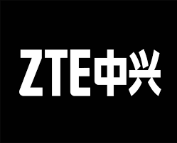

Fundada en 1985 como Zhongxing Semiconductor Co., Ltd., en Shenzhen, China, se inició en la fabricación de dispositivos de conmutación de telecomunicaciones. En las décadas de 1990 y 2000, la empresa experimentó un desarrollo y expansión significativos, diversificándose en equipos de telecomunicaciones y cotizando en bolsa en 1997. En los años 2000, ZTE se expandió internacionalmente, participando en proyectos globales de telecomunicaciones. En la década de 2010, la empresa se destacó en el mercado de dispositivos móviles, conocida por ofrecer teléfonos inteligentes competitivos. Sin embargo, en 2018, enfrentó sanciones de Estados Unidos por violar leyes comerciales, afectando sus operaciones. A pesar de los desafíos, ZTE continúa desarrollando tecnologías avanzadas, particularmente en el ámbito de las redes 5G, y mantiene su relevancia en la industria de las telecomunicaciones y dispositivos móviles.
